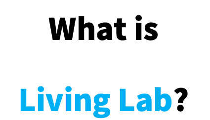
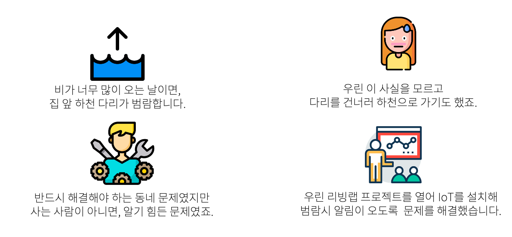

- 리빙랩 정의
- 리빙랩 사례
- 리빙랩 전망

“살아있는 실험실” 사용자의 관점에서 삶에 실질적인 도움이 되는 연구를 말합니다. 다시 말해, 시민의 의견을 수용한 서비스 구현 방법론이 리빙랩이죠. 도시문제를 해결하기 위해서는 도시의 실사용자인 시민이 주체가 되어 시민이 체감할 수 있는 서비스를 발굴함으로써 시민들의 행복과 삶의 질을 향상하는 방향으로 초점을 맞춰야 합니다. 따라서. 리빙랩은 스마트시티의 중요한 과제 중 하나인 것이죠!
리빙랩의 사례는 무엇인가요?
전망은 어떤가요?
생소한 리빙랩. 들어보신 적 없으시다고요? 유럽을 비롯한 세계 전역 스마트시티에서는 이미 안정적으로 리빙랩이 자리잡았죠. 한국도 마찬가지 입니다! 매년 국토교통부 예산이 증가하며, 리빙랩의 중요성 역시 확대되고 있습니다.
2020 정부 혁신 종합 추진계획을 발표하며 리빙랩을 적극 활용하겠다고 밝혀 앞으로도 리빙랩은 활성화될 전망입니다. 어쩌면 우리 동네에서는 이미 시작되고 있을지 모릅니다! 지금 한 번 참여해 볼까요?